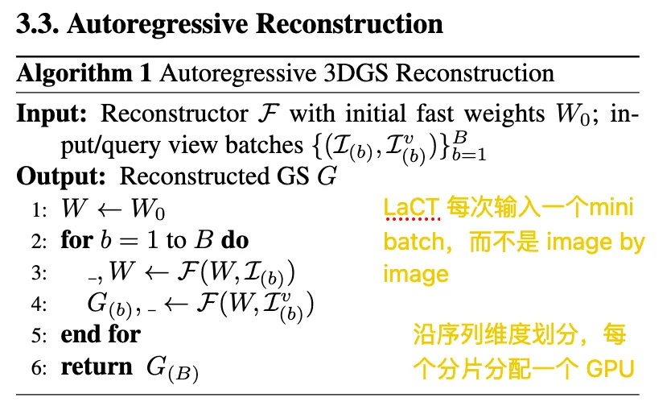
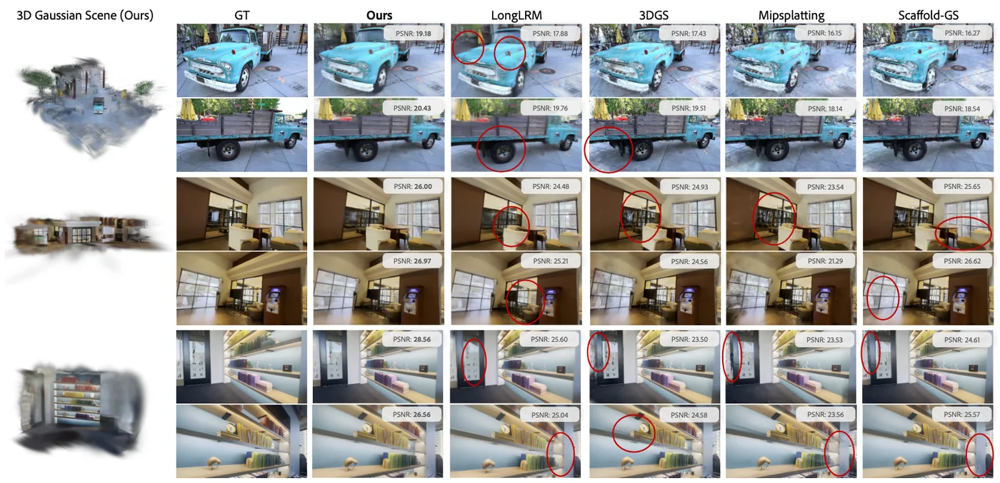

posed multi-view / streaming image-to-3DGS / fast weights as scene memory
这篇文章主要是落在 LRM / NVS 这个方向上。
能看懂的pipeline：
inputs & rays --
patchify & linear encoder --
input tokens --
(
window attention --
K,V projection --
update fast weights(W) --
virtual tokens query W --
Q projection --
apply(W,Q) --
)
update virtual tokens --
linear decoder & unpatchify --
gaussian --
rendering --
NVSCVPR2026 Highlight 核心竞争力：高质量的长序列新视角合成 + 显式高斯表示。
- 优于 GS-LRM，结合 LVSM + explicit 3DGS；
- TTT 替代 full attention，把 fast weights 认为是 latent memory， 解决 GS-LRM 的序列长度瓶颈也就是计算资源消耗的的问题，同时结合 LVSM 的 latent memory 与 显式的 3DGS 表示；
- CUT3R/TTT3R 这些都是聚焦于长序列的点云重建，无法 photorealistic NVS。
把 分布式重建机制 引入到 feedforward 3dgs reconstruction model. 不是 per-scene，也不是按照空间分块重建，而是按照 token 进行分块重建的统一前馈式重建模型。
- Merge-SfM. 并行的是 image clusters. sparse point cloud
- VastGaussian. 并行的是 spatial cells，最后再 cell merge 成完整的 scene. fused / global 3DGS
- Grendel. 并行的是 3DGS 的参数，把 GS 的优化过程拆成多 GPU 并行。global 3DGS
- tttLRM. 并行的是 token.
- fast weights 是通过 pytorch 的 DDP 机制在各个 GPU 之间保持一致的，所以是全局一致的 memory。
- 因为输入条件是 posed images ，所以聚合GS的时候是不需要对齐的，大家都在同一个世界坐标系里。
- 最后只需要一个渲染损失来惩罚两个 GPU 在 gaussian 重叠区域的不一致，同时 深度和不透明度的正则也可以减少深度错误和高斯冗余。
- 如果输入的 pose 不够准确，那聚合后的 GS 的问题就很大了
LaCT：Large Chunk Test-Time Training
- 传统的 TTT 每一次都用很小的 minibatch 来更新fast weights，这就导致它的 GPU 利用效率不高而且还难处理超长序列。所以 LaCT 就是把 fast weight 的更新换成 大chunk 的形式。
- 一个 chunk 中的 所有 keys / values 一起算 loss，然后一次性更新到 fast weights，这样可以每一个 chunk 才更新一次 fast weights，可以提高GPU的利用率并且处理序列更长。
- \(W←W−η∇L(f_W(k_i),v_i)\) 变成 \(W←W−η∇∑_{i∈chunk}L(f_W(k_i),v_i)\)
分布式 LaCT：把 token sequence 按维度拆分成不同的 shard 分派到各个GPU。每个GPU对分配来的 shard 做 fast weights update 和 GS 预测。先得到局部梯度，然后通过 pytorch ddp / all-reduce 获得全局梯度，所有 GPU 同时进行 fast weights update，这样保证全局共享一致 memory。最后不同 GPU 预测不同 GS，然后融合到一起就可以（本任务是 posed image，所以是不需要全局对齐的，直接恢复出来大家都在同一世界坐标系里）。
tttLRM 的 streaming reconstruction:

- 24 LaCT blocks
- window attention 64 layers
Results:
